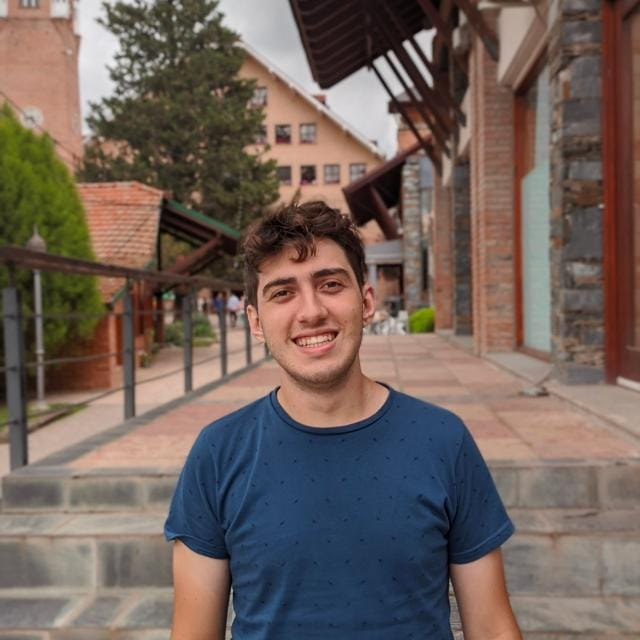

Sebastián SCHUMANN CERAOLO
INFORMACIÓN PERSONAL

Dirección: Boulevard de los Pioneros 1546
Lugar de Residencia: Libertador San Martín, Entre Ríos, Argentina
Fecha de Nacimiento: 7 de Septiembre del 2000.
Lugar de Nacimiento: San Justo, La Matanza, Buenos Aires, Argentina.
Teléfono: +54 343 503 8920
Estado Civil: Soltero
Correo Electrónico:
sebastian.schumann@uap.edu.ar
EDUCACIÓN ACADÉMICA
- Nivel Inicial(completo): 2006-2012; Instituto Modelo San Martín de los Andes, Lomas del Mirador, Buenos Aires, Argentina
- Nivel Secundario(completo): 2013-2018; Bachiller en Economía y Administración en Instituto Adventista del Plata, Libertador San Martín, Entre Rios, Argentina.
- Nivel Universitario(en proceso): 2019-actualidad; 3er año de Ingeniería en Sistemas de la Información en Universidad Adventista del Plata, Libertador San Martín, Entre Rios, Argentina.
EDUCACIÓN ESPECÍFICA
- Instituto de Inglés(completo) 2010-2019
- Nivel de Inglés: B2 en la escala de Cambridge(Independient-User)
EXPERIENCIA LABORAL
- Enero 2018-Inicio de ASPO 2020; Maletero en Centro Adventista Vida Sana, Libertador San Martín, Entre Rios, Argentina
- Limpieza General del Centro Adventista Vida Sana en Diciembre 2017, Diciembre 2018, Diciembre 2019.
- Mes Enero 2021; Cadete/Delivery para Gui Express en Libertador San Martín, Entre Rios, Argentina
HABILIDADES
- Actitud comprensiva, amistosa, empática y agradable
- Excelente estado de salud y fortaleza física
- Paciencia y comprensión ante errores ajenos
- Conocimiento básico de Programación
- Flexibilidad
IDIOMAS
- ESPAÑOL: Nivel Experto
- INGLÉS: Nivel Intermedio
- PORTUGUES: Conocimiento básico
- ITALIANO: Conocimiento básico
INFORMACIÓN ADICIONAL
- DISPONIBILIDAD HORARIA: Absoluta, excepto sábados diurnos y viernes nocturnos. (de preferencia matutina)
- Licencia Nacional de Conducir: A1.2 y B1